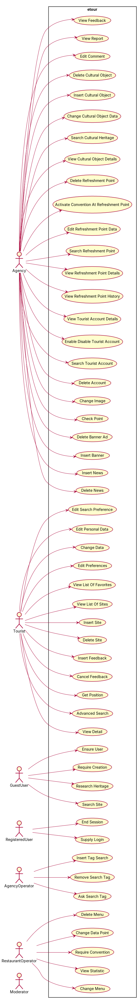
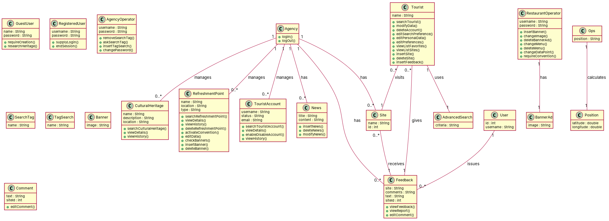

UC1: Description: Delete a cultural object in the system. Entry Operator conditions: The agency has logged. Flow of events User System: 1. View the list of CulturalHeritage as a result of the use case SearchCulturalHeritage, it selects and activates a function of elimination. 2 Asks confirmation. 3 Confirm the operation. 4 Delete the cultural choice. Exit conditions: The system shall notify the successful elimination of the cultural. Operator Agency cancels the operation. Interruption of connection to the server ETOUR. Quality requirements: The system requirements blocks of input controls on receipt of confirmation of cancellation to avoid multiple submissions before the end of the operation. UC2: Description: Inserts a new cultural object in the system. Entry Operator conditions: The agency has logged. Flow of events User System: 1. Activate the feature for the insertion of a new cultural good. 2 Displays the corresponding form. 3 Fill out the form with the data of the cultural and submit. 4 Verify the data entered and asks for confirmation of the transaction. Where the data is invalid or insufficient, the system activates the use case Errored. 5 Confirm the operation. 6. Memorize your new cultural good. Exit conditions: The system shall notify the proper inclusion of the cultural. Operator Agency cancels the operation. Interruption of the connection to the server ETOUR. Quality requirements: The system requirements will not accept duplicates cultural heritage. UC3: Description: Change data of a cultural object in the system. Entry Operator conditions: The agency has logged. Flow of events User System: 1. View the list of cultural goods as a result of the use case SearchCulturalHeritage, it selects and activates a function of change. 2 Load the data of the cultural and displays the form for editing. 3 Change data in the form and submit. 4 Verify the data entered and asks for confirmation of the transaction. Where the data is invalid or insufficient, the system activates the use case Errored. 5 Confirm the operation. 6. Stores the modified data of the cultural. Exit conditions: The notification system has been changing the data of the cultural. Operator Agency cancels the operation. Interruption of the connection to the server ETOUR. Quality requirements: The system requirements blocks of input controls in the form once we receive confirmation of the change to avoid multiple submissions before the end of the operation. UC4: Description: Returns the list of cultural objects in the system according to certain parameters. Entry conditions: Flow of events User System: 1. Activate the search functionality of a cultural object. 2 Show the form for research. 3 Fill in the search form and submit. 4 Processing the request. Exit conditions: The system returns a list of cultural goods that meet the search criteria. Interruption of the connection to the server ETOUR. Quality requirements: The system requirements should return the results within a set time. UC5: Description: View the details of the selected cultural. Entry Operator conditions: The agency has logged. Flow of events User System: 1. View the list of cultural goods as a result of the use case SearchCulturalHeritage, it selects and activates a function to view the card. 2 Loads the data for the selected cultural. Exit conditions: The system displays the details of the selected cultural. Interruption of the connection to the server ETOUR. Quality requirements: UC6: Description: Delete a refreshment from the system. Entry Operator conditions: The agency has logged. Flow of events User System: 1. View a list of points of rest as a result of the use case SearchCulturalHeritage, it selects and activates a function of elimination. 2 Asks for confirmation of the transaction. 3 Confirm the deletion. 4 Deletes the selected point of rest. Exit conditions: The system shall notify the successful elimination of the point of rest. Operator Agency cancels the operation. Interruption ETOUR connection to the server. Quality requirements: UC7: Description: Convention active request by a refreshment point. Entry Operator conditions: The Agency is in the form of a designated point of rest. Flow of events User System: 1. Enable the activation function of the Convention. 2 Load the data request of the Convention from the point of rest and displays the corresponding form. 3 Check the data of the agreement and decide for activation. 4 Asks for confirmation of the activation. 5 Confirm the operation. 6. Processing the request. Exit conditions: The system shall notify the activation of the convention. Interruption of the connection to the server ETOUR. Quality requirements: UC8: Description: Edit the data pertaining to a designated point of rest. Entry Operator conditions: The agency has logged. Flow of events User System: 1. View a list of points of rest as a result of the use case SearchRefreshmentPoint, it selects an active and functional data changes. 2 Upload data from the point of rest and displays the form of change. 3 Change data in the form and submit. 4 Verify the data entered in form and asks for confirmation of the transaction. Where the data is invalid or insufficient, the system activates the use case Errored. 5 Confirm the operation. 6. Stores the modified data of the point of rest. Exit conditions: The system has been reporting the information required by the point of rest. Operator Agency cancels the operation. Interruption of the connection to the server ETOUR. Quality requirements: The system requirements blocks of input controls in the form once we receive confirmation of the change to avoid multiple submissions before the end of the operation. UC9: Description: Returns the list of points of rest in the system according to certain parameters. Entry conditions: Flow of events User System: 1. Activate the search functionality of a point of rest. 2 Show the form for research. 3 Fill in the search form and submit. 4 Processing the request. Exit conditions: The system returns a list of points of rest which meet your search criteria. Interruption of the connection to the server ETOUR. Quality requirements: The system performs the operation in 15 seconds maximum UC10: Description: View the details of a selected point of rest. Entry Operator conditions: The agency has logged. Flow of events User System: 1. View the list of points of rest as a result of the use case SearchRefreshmentPoint, it selects and activates a function to view the card. 2 Upload data to a selected restaurant. Exit conditions: The system displays the details of the selected point of rest. Interruption of the connection to the server ETOUR. Quality requirements: UC11: Description: View the history of conventions derived from a selected point of rest. Entry Operator conditions: The Agency is in the form of a designated point of rest. Flow of events User System: 1. Access the features on the display of historical conventions. 2 Upload data on conventions from the restaurant selected. Exit conditions: The system displays the history of conventions concerning the point of eating selected. Interruption of the connection to the server ETOUR. Quality requirements: UC12: Description: View the details of a selected account Tourist. Entry Operator conditions: The agency has logged. Flow of events User System: 1. Tourists from the list obtained by activating the use case SearchTourist will select and activate a function for displaying the card. 2 Upload data to the selected account. Exit conditions: The system displays the card's Tourist selected. Interruption of the connection to the server ETOUR. Quality requirements: UC13: Description: Enable or disable the account of a tourist. Entry Operator conditions: The Agency is in the form of a tourist. Flow of events User System: 1. Activate the feature for the activation / deactivation by a given sheet tourist. 2 Asks for confirmation of activation / deactivation. 3 Confirm the operation. 4 Enable / disable
Red, struck-through: removed by ambiguity removal; green: added.
| actors (12 → 11) |
|---|
| account tourist |
| agency operator |
| guest |
| guest user |
| operator |
| point restaurant operator |
| registered user |
| restaurant operator |
| sheet tourist |
| tourist |
| user |
| visitor |
| Visitor |
| classes (129 → 109) |
|---|
| Access |
| Account |
| AccountTourist |
| Activation |
| Agency |
| Agreement |
| Area |
| Banner |
| BannerAd |
| Block |
| Bookmark |
| Call |
| Card |
| Change |
| ChangeData |
| Characteristic |
| Choice |
| Comment |
| Computer |
| Confirmation |
| Connection |
| Convention |
| Cultural |
| DataNews |
| Day |
| Deactivation |
| Delete |
| Deletion |
| Disconnection |
| Display |
| Displays |
| Eating |
| EditMenu |
| Elimination |
| EntryCondition |
| ErrorMessage |
| Etour |
| Event |
| EventsUserSystem |
| ExitCondition |
| Favorite |
| Feedback |
| FeedbackExitCondition |
| Fill |
| Flow |
| Form |
| Function |
| Good |
| Gps |
| GuestUser |
| Heritage |
| History |
| Image |
| Inclusion |
| InputControl |
| Insert |
| Insertion |
| Inserts |
| Interruption |
| Issue |
| Load |
| Location |
| Login |
| Menu |
| MenuSelection |
| Message |
| Modification |
| News |
| Notification |
| NotificationSystem |
| Object |
| Operation |
| Operator |
| OperatorAgency |
| OperatorRestaurant |
| Parameter |
| Picture |
| Point |
| Position |
| Preference |
| QualityRequirement |
| Reading |
| Recovers |
| RefreshmentPoint |
| Refreshments |
| Removal |
| Report |
| Request |
| Research |
| Rest |
| RestUseCaseSearchrefreshmentpoint |
| Restaurant |
| RestaurantOperator |
| RestaurantPoint |
| Result |
| Return |
| Search |
| SearchCriterion |
| SearchForm |
| SearchPreference |
| SearchSite |
| SearchTag |
| SearchTourist |
| Second |
| Select |
| Selection |
| Server |
| Sites |
| State |
| Statistic |
| Store |
| Submission |
| SystemRequirement |
| Tag |
| TagSearch |
| Tourism |
| Tourist |
| TouristCard |
| Transaction |
| TransactionChange |
| UploadData |
| UseCase |
| UseCaseSearchculturalheritage |
| UseCaseSearchrefreshmentpoint |
| User |
| UserInteraction |
| View |
| Visitor |
| Week |
| attributes (16 → 13) |
|---|
| Banner.editing functionality |
| Comment.alteration |
| Confirmation.receipt |
| Connection.operation interruption |
| Convention.activation function |
| Convention.data request |
| EventsUserSystem.banner flow |
| EventsUserSystem.favorites flow |
| Feedback.combination |
| Menu.editing functionality |
| News.amendment |
| News.editing functionality |
| News.placement |
| Object.search functionality |
| Point.search functionality |
| Tourist.search functionality |
| relations (94 → 34) |
|---|
| association: EditMenu -> Form |
| association: Good -> SearchCriterion |
| association: Gps -> Position |
| association: GuestUser -> Operation |
| association: NotificationSystem -> Restaurant |
| association: OperatorAgency -> Operation |
| association: Point -> Operation |
| association: Point -> SearchCriterion |
| association: RestaurantPoint -> Operation |
| association: Store -> Account |
| association: SystemRequirement -> Result |
| association: Tourist -> FeedbackExitCondition |
| association: Tourist -> Function |
| association: Tourist -> Operation |
| association: User -> Feedback |
| association: User -> Login |
| association: User -> Operation |
| association: Visitor -> Feedback |
| generalization: NotificationSystem -> Elimination |
| has: Account -> Elimination |
| has: Activation -> Confirmation |
| has: Agreement -> Form |
| has: BannerAd -> Image |
| has: Banner -> Change |
| has: Banner -> Elimination |
| has: Banner -> Insertion |
| has: Banner -> Modification |
| has: Banner -> Removal |
| has: Card -> Tourist |
| has: Change -> Confirmation |
| has: Change -> Form |
| has: Change -> Function |
| has: Comment -> Change |
| has: Confirmation -> Reading |
| has: Connection -> Favorite |
| has: Connection -> Interruption |
| has: Convention -> Activation |
| has: Convention -> Display |
| has: Convention -> History |
| has: Cultural -> Elimination |
| has: Cultural -> Inclusion |
| has: Day -> EditMenu |
| has: Deactivation -> Confirmation |
| has: Eating -> Point |
| has: EditMenu -> Confirmation |
| has: Elimination -> Function |
| has: EventsUserSystem -> Flow |
| has: Feedback -> Comment |
| has: Feedback -> Issue |
| has: Good -> Insertion |
| has: GuestUser -> Access |
| has: Guest -> Position |
| has: Image -> Selection |
| has: InputControl -> Block |
| has: Insertion -> Confirmation |
| has: Insertion -> Operation |
| has: MenuSelection -> Elimination |
| has: Menu -> Modification |
| has: News -> Deletion |
| has: News -> Elimination |
| has: Notification -> Reading |
| has: OperatorRestaurant -> Point |
| has: Operator -> RestaurantPoint |
| has: Point -> Banner |
| has: Point -> Elimination |
| has: Point -> Form |
| has: Preference -> Modification |
| has: Reading -> Confirmation |
| has: RefreshmentPoint -> Convention |
| has: Refreshments -> Banner |
| has: Removal -> Function |
| has: Request -> Confirmation |
| has: Research -> Form |
| has: RestUseCaseSearchrefreshmentpoint -> Point |
| has: Rest -> Point |
| has: RestaurantOperator -> Point |
| has: Restaurant -> Menu |
| has: Restaurant -> Point |
| has: SearchPreference -> Modification |
| has: Search -> Form |
| has: Tag -> Elimination |
| has: Tag -> Inclusion |
| has: Tourist -> Account |
| has: Tourist -> Elimination |
| has: Tourist -> Form |
| has: Tourist -> Position |
| has: TransactionChange -> Confirmation |
| has: Transaction -> Confirmation |
| has: UseCaseSearchculturalheritage -> Result |
| has: UseCaseSearchrefreshmentpoint -> Result |
| has: UseCase -> Result |
| has: User -> Access |
| has: Visitor -> Account |
| has: Week -> Day |
| id | req | type | cue | status | readings / explanation |
|---|---|---|---|---|---|
| A1 | UC1 | referential | it | resolved | it refers to the use case SearchCulturalHeritage; it refers to the use case SearchRefreshmentPoint The use of 'it' is ambiguous as it could refer to either use case. |
| A2 | UC1 | quantifier | multiple | resolved | multiple submissions; single submission The term 'multiple' is ambiguous as it could refer to multiple submissions or a single submission. |
| A3 | UC2 | incompleteness | data | resolved | invalid or insufficient data; valid data The term 'invalid or insufficient' is ambiguous as it could refer to invalid or insufficient data or valid data. |
| A4 | UC2 | incompleteness | proper | resolved | proper inclusion; inclusion The term 'proper' is ambiguous as it could refer to proper inclusion or inclusion. |
| A5 | UC3 | referential | it | resolved | it refers to the use case SearchCulturalHeritage; it refers to the use case SearchRefreshmentPoint The use of 'it' is ambiguous as it could refer to either use case. |
| A6 | UC3 | incompleteness | data | resolved | invalid or insufficient data; valid data The term 'invalid or insufficient' is ambiguous as it could refer to invalid or insufficient data or valid data. |
| A7 | UC3 | quantifier | multiple | resolved | multiple submissions; single submission The term 'multiple' is ambiguous as it could refer to multiple submissions or a single submission. |
| A8 | UC4 | incompleteness | certain | resolved | certain parameters; any parameters The term 'certain' is ambiguous as it could refer to certain parameters or any parameters. |
| A9 | UC5 | incompleteness | details | resolved | details of the selected cultural; details of the selected point of rest The term 'details' is ambiguous as it could refer to the details of the selected cultural or the selected point of rest. |
| A10 | UC5 | referential | it | resolved | it refers to the use case SearchCulturalHeritage; it refers to the use case SearchRefreshmentPoint The use of 'it' is ambiguous as it could refer to either use case. |
| A11 | UC5 | incompleteness | details | resolved | details of the selected cultural; details of the selected point of rest The term 'details' is ambiguous as it could refer to the details of the selected cultural or the selected point of rest. |
| A12 | UC6 | referential | it | resolved | it refers to the use case SearchCulturalHeritage; it refers to the use case SearchRefreshmentPoint The use of 'it' is ambiguous as it could refer to either use case. |
| A13 | UC8 | referential | it | resolved | active and functional data changes; active and functional data changes The term 'active and functional' is consistent and not ambiguous. |
| A14 | UC8 | incompleteness | data | resolved | invalid or insufficient data; valid data The term 'invalid or insufficient' is ambiguous as it could refer to invalid or insufficient data or valid data. |
| A15 | UC8 | incompleteness | information | resolved | information required by the point of rest; information required by the selected account Tourist The term 'information' is ambiguous as it could refer to the information required by the point of rest or the selected account Tourist. |
| A16 | UC8 | quantifier | multiple | resolved | multiple submissions; single submission The term 'multiple' is ambiguous as it could refer to multiple submissions or a single submission. |
| A17 | UC9 | incompleteness | certain | resolved | certain parameters; any parameters The term 'certain' is ambiguous as it could refer to certain parameters or any parameters. |
| A18 | UC10 | incompleteness | details | resolved | details of a selected point of rest; details of a selected account Tourist The term 'details' is ambiguous as it could refer to the details of a selected point of rest or a selected account Tourist. |
| A19 | UC10 | referential | it | resolved | it refers to the use case SearchRefreshmentPoint; it refers to the use case SearchTourist The use of 'it' is ambiguous as it could refer to either use case. |
| A20 | UC10 | incompleteness | details | resolved | details of the selected point of rest; details of the selected account Tourist The term 'details' is ambiguous as it could refer to the details of a selected point of rest or a selected account Tourist. |
| A21 | UC12 | incompleteness | details | resolved | details of a selected account Tourist; details of a selected point of rest The term 'details' is ambiguous as it could refer to the details of a selected account Tourist or a selected point of rest. |
| A22 | UC14 | incompleteness | certain | resolved | certain parameters; any parameters The term 'certain' is ambiguous as it could refer to certain parameters or any parameters. |
| A23 | UC15 | referential | it | resolved | it refers to the use case SearchTourist; it refers to the use case SearchRefreshmentPoint The use of 'it' is ambiguous as it could refer to either use case. |
| A24 | UC15 | referential | them | resolved | them refers to the selected data; them refers to the selected account Tourist The term 'them' is ambiguous as it could refer to the selected data or the selected account Tourist. |
| A25 | UC15 | incompleteness | information | resolved | information required by the selected account Tourist; information required by the point of rest The term 'information' is ambiguous as it could refer to the information required by the selected account Tourist or the point of rest. |
| A26 | UC15 | incompleteness | data | resolved | invalid or insufficient data; valid data The term 'invalid or insufficient' is ambiguous as it could refer to invalid or insufficient data or valid data. |
| A27 | UC15 | incompleteness | information | resolved | information required by the selected account Tourist; information required by the point of rest The term 'information' is ambiguous as it could refer to the information required by the selected account Tourist or the point of rest. |
| A28 | UC18 | incompleteness | it | resolved | certain parameters; any parameters The term 'certain' is ambiguous as it could refer to certain parameters or any parameters. |
| A29 | UC21 | incompleteness | data | resolved | invalid or insufficient data; valid data The term 'invalid or insufficient' is ambiguous as it could refer to invalid or insufficient data or valid data. |
| A30 | UC21 | incompleteness | proper | resolved | proper placement of the news; placement of the news The term 'proper' is ambiguous as it could refer to proper placement or placement. |
| A31 | UC22 | incompleteness | data | open | The requirement is incomplete and does not provide enough context to determine its meaning. |
| A32 | UC23 | incompleteness | information | open | The requirement is incomplete and does not provide enough context to determine its meaning. |
| A33 | UC23 | incompleteness | data | open | The requirement is incomplete and does not provide enough context to determine its meaning. |
| A34 | UC23 | incompleteness | data | open | The requirement is incomplete and does not provide enough context to determine its meaning. |
| A35 | UC24 | referential | it | resolved | View the list of sites as a result of the use case SearchSite, it selects and activates a function to view the feedback.; View the list of sites as a result of the use case SearchSite, it selects and activates a function of change in the selected comment. The use of 'it' is ambiguous, as it could refer to the system or the user. |
| A36 | UC26 | referential | it | resolved | View the list of sites as a result of the use case SearchSite, it selects and activates a function to view the feedback.; View the list of sites as a result of the use case SearchSite, it selects and activates a function of change in the selected comment. The use of 'it' is ambiguous, as it could refer to the system or the user. |
| A37 | UC26 | incompleteness | data | open | The requirement is incomplete and does not provide enough context to determine its meaning. |
| A38 | UC26 | actor | passive 'modified' without agent | resolved | Exit conditions: The notification system has been modified for the comment feedback selected.; Exit conditions: The notification system has been modified for the comment selected. The actor is passive and does not specify who is modifying the notification system. |
| A39 | UC28 | quantifier | one or more | resolved | Description: Removes one or more search tags in the system.; Description: Removes one or more tags from the list and sends the request for deletion. The use of 'one or more' is ambiguous, as it could refer to search tags or tags from the list. |
| A40 | UC28 | coordination | and+or | resolved | 3 Select one or more tags from the list and sends the request for deletion.; 3 Select one or more tags from the list and sends the request for deletion. The use of 'and/or' is redundant and does not add clarity. |
| A41 | UC28 | quantifier | one or more | resolved | 3 Select one or more tags from the list and sends the request for deletion.; 3 Select one or more tags from the list and sends the request for deletion. The use of 'one or more' is ambiguous, as it could refer to search tags or tags from the list. |
| A42 | UC29 | actor | passive 'asked' without agent | resolved | Entry conditions: He was asked to enter a search tags already in the system.; Entry conditions: He was asked to enter a search tag already in the system. The actor is passive and does not specify who is asking the user to enter a search tag. |
| A43 | UC29 | actor | passive 'asked' without agent | resolved | Entry conditions: He was asked to enter a search tags already in the system.; Entry conditions: He was asked to enter a search tag already in the system. The actor is passive and does not specify who is asking the user to enter a search tag. |
| A44 | UC29 | referential | its | resolved | Notice the error message and asks for confirmation of its reading.; Notice the error message and asks for confirmation of its deletion. The use of 'its' is ambiguous, as it could refer to the reading or the deletion. |
| A45 | UC30 | incompleteness | information | open | The requirement is incomplete and does not provide enough context to determine its meaning. |
| A46 | UC30 | incompleteness | data | open | The requirement is incomplete and does not provide enough context to determine its meaning. |
| A47 | UC31 | incompleteness | appropriate | open | The requirement is incomplete and does not provide enough context to determine its meaning. |
| A48 | UC32 | actor | passive 'asked' without agent | resolved | Description: He was asked to enter a password but is not confirmed in a correct way.; Description: He was asked to enter a password but is not confirmed in a correct way. The actor is passive and does not specify who is asking the user to enter a password. |
| A49 | UC32 | referential | It | resolved | Entry conditions: It has been pressed the button to confirm the password change Flow of events User System: 4 Notify an error message.; Entry conditions: It has been pressed the button to confirm the password change Flow of events User System: 4 Notify an error message. The use of 'It' is ambiguous, as it could refer to the system or the user. |
| A50 | UC32 | actor | passive 'pressed' without agent | resolved | Entry conditions: It has been pressed the button to confirm the password change Flow of events User System: 4 Notify an error message.; Entry conditions: It has been pressed the button to confirm the password change Flow of events User System: 4 Notify an error message. The actor is passive and does not specify who is pressing the button to confirm the password change. |
| A51 | UC33 | incompleteness | data | open | The requirement is incomplete and does not provide enough context to determine its meaning. |
| A52 | UC35 | incompleteness | information | open | The requirement is incomplete and does not provide enough context to determine its meaning. |
| A53 | UC41 | incompleteness | data | open | The requirement is incomplete and does not provide enough context to determine its meaning. |
| A54 | UC43 | incompleteness | information | open | The requirement is incomplete and does not provide enough context to determine its meaning. |
| A55 | UC43 | incompleteness | data | open | The requirement is incomplete and does not provide enough context to determine its meaning. |
| A56 | UC44 | incompleteness | data | open | The requirement is incomplete and does not provide enough context to determine its meaning. |
| A57 | UC47 | referential | them | resolved | 2 Loads the data and displays them in a form.; 2 Loads the data and displays them in a form. The use of 'them' is ambiguous, as it could refer to the data or the form. |
| A58 | UC47 | incompleteness | information | open | The requirement is incomplete and does not provide enough context to determine its meaning. |
| A59 | UC47 | incompleteness | data | open | The requirement is incomplete and does not provide enough context to determine its meaning. |
| A60 | UC52 | actor | passive 'removed' without agent | resolved | Exit conditions: The notification system has been removed from the site bookmarks.; Exit conditions: The notification system has been removed from the site bookmarks. The actor is passive and does not specify who is removing the notification system from the site bookmarks. |
| A61 | UC53 | incompleteness | data | rejected | The sentence is incomplete and does not provide enough information to determine its meaning. |
| A62 | UC54 | incompleteness | details | rejected | The sentence is incomplete and does not provide enough information to determine its meaning. |
| A63 | UC54 | incompleteness | appropriate | rejected | The sentence is incomplete and does not provide enough information to determine its meaning. |
| A64 | UC54 | incompleteness | data | rejected | The sentence is incomplete and does not provide enough information to determine its meaning. |
| A65 | UC55 | actor | passive 'issued' without agent | resolved | He has already been issued with a feedback for the selected site.; He has already issued a feedback for the selected site. The actor is either the tourist who has already received a feedback or the tourist who has issued a feedback. |
| A66 | UC56 | coordination | noun or noun | resolved | He began a search.; He began an advanced search. The sentence is ambiguous between a general search and an advanced search. |
| A67 | UC58 | incompleteness | details | rejected | The sentence is incomplete and does not provide enough information to determine its meaning. |
| A68 | UC58 | actor | passive 'located' without agent | resolved | The tourist has successfully authenticated to the system and is located in one of the following areas: Research Results, List of Sites Visited, Sites and List of Favorites.; The tourist has successfully authenticated to the system and is located in one of the following areas: Research Results, List of Sites Visited, and List of Favorites. The sentence is ambiguous between including a comma before 'and' or not. |
| A69 | UC58 | incompleteness | details | rejected | The sentence is incomplete and does not provide enough information to determine its meaning. |
| A70 | UC32 | actor | use case 'Ask Password' without actor | resolved | He was asked to enter a password but is not confirmed in a correct way.; He was asked to enter a password but is not confirmed in a correct manner. The sentence is ambiguous between 'way' and 'manner'. |
| A71 | UC29 | actor | use case 'Ask SearchTag' without actor | resolved | He was asked to enter a search tag already in the system.; He was asked to enter a search tag that is already in the system. The sentence is ambiguous between 'already in the system' and 'that is already in the system'. |
| A72 | UC23 | actor | use case 'Change Data' without actor | resolved | Change data of a news on the computer.; Change data of a news in the system. The sentence is ambiguous between 'on the computer' and 'in the system'. |
| A73 | UC3 | actor | use case 'Change Data' without actor | resolved | Change data of a cultural object in the system.; Change data of a cultural object on the computer. The sentence is ambiguous between 'in the system' and 'on the computer'. |
| A74 | UC17 | actor | use case 'Change Image' without actor | resolved | Changing the image of a banner ad.; Changing the image of a banner ad on the computer. The sentence is ambiguous between 'of a banner ad' and 'of a banner ad on the computer'. |
| A75 | UC18 | actor | use case 'Check Point' without actor | resolved | Check if a point Refreshments included the maximum number of allowed banners to it.; Check if a point Refreshments has the maximum number of allowed banners. The sentence is ambiguous between 'included the maximum number of allowed banners' and 'has the maximum number of allowed banners'. |
| A76 | UC7 | actor | use case 'Convention Request' without actor | resolved | Convention active request by a refreshment point.; Convention active request by a refreshment point operator. The sentence is ambiguous between 'by a refreshment point' and 'by a refreshment point operator'. |
| A77 | UC19 | actor | use case 'Delete BannerAd' without actor | resolved | Delete a banner ad associated with a refreshment bar on the computer.; Delete a banner ad associated with a refreshment bar in the system. The sentence is ambiguous between 'on the computer' and 'in the system'. |
| A78 | UC22 | actor | use case 'Delete News' without actor | resolved | Delete a news in the system.; Delete a news on the computer. The sentence is ambiguous between 'in the system' and 'on the computer'. |
| A79 | UC1 | actor | use case 'Delete Object' without actor | resolved | Delete a cultural object in the system.; Delete a cultural object on the computer. The sentence is ambiguous between 'in the system' and 'on the computer'. |
| A80 | UC6 | actor | use case 'Delete Refreshment' without actor | resolved | Delete a refreshment from the system.; Delete a refreshment on the computer. The sentence is ambiguous between 'from the system' and 'on the computer'. |
| A81 | UC26 | actor | use case 'Edit Comment' without actor | resolved | Editing a comment by a feedback selected.; Editing a comment on a feedback selected. The sentence is ambiguous between 'by a feedback selected' and 'on a feedback selected'. |
| A82 | UC54 | actor | use case 'Edit Comment' without actor | resolved | Edit the comment previously issued.; Edit the comment previously issued by the system. The sentence is ambiguous between 'previously issued' and 'previously issued by the system'. |
| A83 | UC8 | actor | use case 'Edit Data' without actor | resolved | Edit the data pertaining to a designated point of rest.; Edit the data of a designated point of rest. The sentence is ambiguous between 'pertaining to' and 'of'. |
| A84 | UC20 | actor | use case 'Insert Banner' without actor | resolved | Inserting a new banner associated with a point of rest.; Inserting a new banner for a point of rest. The sentence is ambiguous between 'associated with' and 'for'. |
| A85 | UC21 | actor | use case 'Insert News' without actor | resolved | Inserts a new news in the system.; Inserts a new news on the computer. The sentence is ambiguous between 'in the system' and 'on the computer'. |
| A86 | UC2 | actor | use case 'Insert Object' without actor | resolved | Inserts a new cultural object in the system.; Inserts a new cultural object on the computer. The sentence is ambiguous between 'in the system' and 'on the computer'. |
| A87 | UC51 | actor | use case 'Insert Site' without actor | resolved | Inserts a site selected in the list of bookmarks.; Inserts a site in the list of bookmarks. The sentence is ambiguous between 'selected in the list of bookmarks' and 'in the list of bookmarks'. |
| A88 | UC30 | actor | use case 'Insert TagSearch' without actor | resolved | Inserts a new tag search.; Inserts a new tag search in the system. The sentence is ambiguous between 'a new tag search' and 'a new tag search in the system'. |
| A89 | UC28 | actor | use case 'Remove SearchTag' without actor | resolved | Removes one or more search tags in the system.; Removes one or more search tags from the system. The sentence is ambiguous between 'in the system' and 'from the system'. |
| A90 | UC4 | actor | use case 'Return List' without actor | resolved | Returns the list of cultural objects in the system according to certain parameters.; Returns the list of cultural objects on the computer according to certain parameters. The sentence is ambiguous between 'in the system' and 'on the computer'. |
| A91 | UC9 | actor | use case 'Return List' without actor | resolved | tourist; guest user The actor for 'Return List' is ambiguous as it could be either a tourist or a guest user. |
| A94 | UC10 | actor | use case 'View Detail' without actor | resolved | tourist; guest user The actor for 'View Detail' is ambiguous as it could be either a tourist or a guest user. |
| A95 | UC5 | actor | use case 'View Detail' without actor | resolved | tourist; guest user The actor for 'View Detail' is ambiguous as it could be either a tourist or a guest user. |


"""Code skeleton generated from the shared model of D3/etour.
Every class and method records the requirement(s) it traces to."""
from __future__ import annotations
import dataclasses as _dc
import enum as _enum
import typing as _t
@_dc.dataclass
class Agency:
"""Source: -"""
culturalHeritages: _t.List["CulturalHeritage"] = _dc.field(default_factory=list)
refreshmentPoints: _t.List["RefreshmentPoint"] = _dc.field(default_factory=list)
touristAccounts: _t.List["TouristAccount"] = _dc.field(default_factory=list)
sites: _t.List["Site"] = _dc.field(default_factory=list)
newses: _t.List["News"] = _dc.field(default_factory=list)
feedbacks: _t.List["Feedback"] = _dc.field(default_factory=list)
def logIn(self) -> None:
"""Operation."""
raise NotImplementedError
def logOut(self) -> None:
"""Operation."""
raise NotImplementedError
@_dc.dataclass
class CulturalHeritage:
"""Source: UC4, UC10, UC12"""
name: _t.Optional[str] = None
description: _t.Optional[str] = None
location: _t.Optional[str] = None
def searchCulturalHeritage(self) -> None:
"""Realizes UC4 "Search Cultural Heritage" (UC4)."""
raise NotImplementedError
def viewDetails(self) -> None:
"""Realizes UC5 "View Cultural Object Details" (UC5)."""
raise NotImplementedError
def viewHistory(self) -> None:
"""Realizes UC11 "View Refreshment Point History" (UC11)."""
raise NotImplementedError
@_dc.dataclass
class RefreshmentPoint:
"""Source: UC6, UC8, UC9, UC11"""
name: _t.Optional[str] = None
location: _t.Optional[str] = None
type: _t.Optional[str] = None
def searchRefreshmentPoint(self) -> None:
"""Realizes UC9 "Search Refreshment Point" (UC9)."""
raise NotImplementedError
def viewDetails(self) -> None:
"""Realizes UC10 "View Refreshment Point Details" (UC10)."""
raise NotImplementedError
def viewHistory(self) -> None:
"""Realizes UC11 "View Refreshment Point History" (UC11)."""
raise NotImplementedError
def deleteRefreshmentPoint(self) -> None:
"""Realizes UC6 "Delete Refreshment Point" (UC6)."""
raise NotImplementedError
def activateConvention(self) -> None:
"""Realizes UC7 "Activate Convention At Refreshment Point" (UC7)."""
raise NotImplementedError
def editData(self) -> None:
"""Realizes UC8 "Edit Refreshment Point Data" (UC8)."""
raise NotImplementedError
def checkBanners(self) -> None:
"""Realizes UC18 "Check Point" (UC18)."""
raise NotImplementedError
def insertBanner(self) -> None:
"""Realizes UC20 "Insert Banner" (UC20, UC38)."""
raise NotImplementedError
def deleteBanner(self) -> None:
"""Realizes UC19 "Delete Banner Ad" (UC19, UC40)."""
raise NotImplementedError
@_dc.dataclass
class TouristAccount:
"""Source: UC12, UC13, UC14"""
username: _t.Optional[str] = None
status: _t.Optional[str] = None
email: _t.Optional[str] = None
def searchTouristAccount(self) -> None:
"""Realizes UC14 "Search Tourist Account" (UC14)."""
raise NotImplementedError
def viewDetails(self) -> None:
"""Realizes UC12 "View Tourist Account Details" (UC12)."""
raise NotImplementedError
def enableDisableAccount(self) -> None:
"""Realizes UC13 "Enable Disable Tourist Account" (UC13)."""
raise NotImplementedError
def viewHistory(self) -> None:
"""Realizes UC12 "View Tourist Account Details" (UC12)."""
raise NotImplementedError
@_dc.dataclass
class Tourist:
"""Source: UC15, UC16"""
name: _t.Optional[str] = None
site: _t.Optional["Site"] = None
feedback: _t.Optional["Feedback"] = None
advancedSearch: _t.Optional["AdvancedSearch"] = None
def searchTourist(self) -> None:
"""Operation."""
raise NotImplementedError
def modifyData(self) -> None:
"""Operation."""
raise NotImplementedError
def deleteAccount(self) -> None:
"""Operation."""
raise NotImplementedError
def editSearchPreference(self) -> None:
"""Realizes UC40 "Edit Search Preference" (UC46)."""
raise NotImplementedError
def editPersonalData(self) -> None:
"""Realizes UC41 "Edit Personal Data" (UC47)."""
raise NotImplementedError
def editPreferences(self) -> None:
"""Realizes UC42 "Edit Preferences" (UC48)."""
raise NotImplementedError
def viewListFavorites(self) -> None:
"""Realizes UC43 "View List Of Favorites" (UC49)."""
raise NotImplementedError
def viewListSites(self) -> None:
"""Realizes UC44 "View List Of Sites" (UC50)."""
raise NotImplementedError
def insertSite(self) -> None:
"""Realizes UC45 "Insert Site" (UC51)."""
raise NotImplementedError
def deleteSite(self) -> None:
"""Realizes UC46 "Delete Site" (UC52)."""
raise NotImplementedError
def insertFeedback(self) -> None:
"""Realizes UC47 "Insert Feedback" (UC53)."""
raise NotImplementedError
@_dc.dataclass
class BannerAd:
"""Source: UC17, UC19, UC20"""
image: _t.Optional[str] = None
@_dc.dataclass
class News:
"""Source: UC21, UC22, UC23"""
title: _t.Optional[str] = None
content: _t.Optional[str] = None
def insertNews(self) -> None:
"""Realizes UC21 "Insert News" (UC21)."""
raise NotImplementedError
def deleteNews(self) -> None:
"""Realizes UC22 "Delete News" (UC22)."""
raise NotImplementedError
def modifyNews(self) -> None:
"""Operation."""
raise NotImplementedError
@_dc.dataclass
class Feedback:
"""Source: UC24, UC25, UC26"""
site: _t.Optional[str] = None
comments: _t.Optional[str] = None
text: _t.Optional[str] = None
siteId: _t.Optional[int] = No
| python_compiles | True |
|---|---|
| java_compiles | True |
| attribute_mismatches | 0 |
| method_mismatches | 0 |
| use_cases | 51 |
| use_cases_without_actor | 0 |
| use_cases_without_method | 8 |
| actors_without_use_case | 1 |
| relations_to_unknown_class | 0 |
| inconsistencies | 9 |
| inconsistency_rate | 0.1139 |
| requirement_coverage | 0.9828 |
| validator fixes | |
| assumptions for open ambiguities | [{"tag": "A3", "assumption": "The 'Agency' class will handle the deletion and insertion of cultural objects, refreshment points, and news, as well as the management of feedback and site data. The 'Tourist' class will handle the viewing and modification of personal data, preferences, and site details. The 'RestaurantOperator' class will handle the management of menus and data points."}] |
| element | P | R | F1 | TP/FP/FN |
|---|---|---|---|---|
| use_cases | 0.451 | 0.397 | 0.422 | 23/28/35 |
| actors_of_use_cases | 1.0 | 1.0 | 1.0 | 20/0/0 |
| trace_links | 0.716 | 0.344 | 0.465 | 106/42/202 |